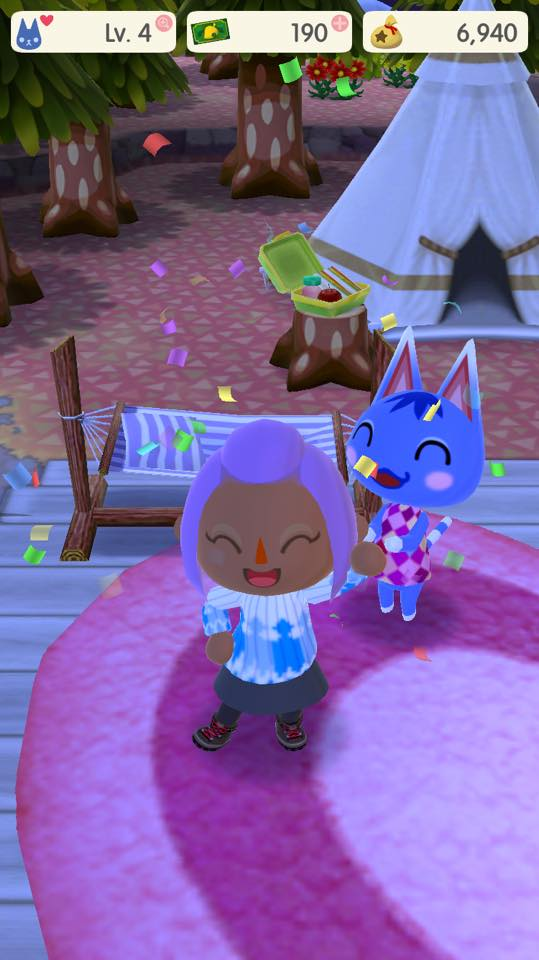

Welcome To My Pocket Camp :D
Welome to my pocket camp. Here, I will be posting small updates on my Camp while also explaining parts of the game but, for now i'm going to
tell you all a little bit about my self. My name is Shay. I'm 22 years of age and have been an Animal Crossing fan since Wild World. My favorite foods are Gumbo & Pasta.
My favorite Animal is a Panda. I am an anime lover & cosplayer. My favorite Anime I have a ungodly love for Plushies xD ! I Love to play video games as well as read books.
My favorite stores are Game stop & Barns & Noble. My favorite villagers in Animal Crossi are:Chrissy, Francine, Maple, Miranda, Rosie, Beau, Lolly & Zell.
My favorite Special NCPS are: Cyrus, Reese, Gracie & Kapp'n.I also play New Leaf as well as Happy Home. :)
Day 1

Day 1: Pocket camp is quite fun. In this new add on to the Animal faimly you are the new camp manager. Your job is to create a new campsite
while exploring the great outdoors of nature. While you explore you will run into other campers and campsites as well as new campsite members
you can make friends with and ask to join your campsite. In order to make friends with them you must rasie your friendship levels with them by
collecting items along the way such as: Fish, seashells, bugs and furits to give to them. Now,tho it soundslike alot to be it is really quite simple
and fun.By the end of the day i was already at level 4 and got Rosie as my first campsite member. I also earned a good bit of leaf tickets. Lucky me !
*If your wondering what leaf tickets are they currency introduced in Pocket Camp.
They can be obtained by completing Timed Goals or Stretch Goals for Isabelle; or they may be bought for real-life currency. They are sold to you by Tom Nook.
Leaf Tickets are entirely optional, however, there are certain items and bonuses that are only attainable through using Leaf Tickets to purchase them.
They can be used and exchanged for:
- the throw net, which allows you to catch multiple fish at once.
- the honey, which allows you to catch multiple bugs at once.
- fertilizer.
- entrance to Shovelstrike Quarry (for minerals).
- placing craft orders when you don't have all the required materials.
- increase the speed of Cyrus' furniture production.
- expanding your inventory.
- K.K. Slider's chair and Tom Nook's chair.
Day 2
Day 2: Today I finally got to explore The OK Motors. OK Motors is a new location added in Pocket Camp, it's a place where players can customize their campers.
It is operated by Giovanni, who is the boss, and his employees Beppe and Carlo(who are his brothers). Players can change the style of their camper van,
as well as the main body color and accent color. When you first get there they give you your first paint job for free. After that normal paint jobs cost 5,000 Bells
per paint job you want done. Special Designs can cost anywere from 8,000 to 10,000 Bells or 150 leaf tickets(a in game buyable currency ). There are also Expansion that you
can get in order to upgrade your camper and they get a bit pricey of the back.
Expansions
First Floor Expansion: 10,000 Bells. Layout: 4x6
Second Floor: 30,000 Bells. Layout: 4x4
Second Floor Expansion: 50,000 Bells.Layout:4x6
Additional First Floor Expansion: 100,000 Bells. Layout:5x6
First Floor "Supersize" Expansion: 150,000 Bells. Layout: 5x8
Here is a list of the Normal Paint Jobs you can get for 5,000 Bells:
- Two-Tone
- Simple Stripes
- Two-tone Wave
- Vertical Stripes
- Racing Stripes
- Big Stripe
- horizontal stripes
The following are Special Designs from 8,000 to 10,000 Bells or 150 Leaf tickets:
- Lovely Lace: 8,000 Bells
- Patched Together: 150 leaf tickets
- Blue Sweater-Vest: 8,000 Bells
- Flower Power: 150 leaf tickets
- Camo Chic: 8,000 Bells
- Retro Ride: 150 leaf tickets
- Animal Crossing: Tenth Day Log-In Bonus
- Splatter Up: 10,000 Bells
- Baker's Dozen: 10,000 Bells

- Flaming Forward: 150 leaf tickets
- Playtime: 10,000 Bells
- LumberJack: 150 leaf tickets
- Garden Party: 150 leaf tickets
Day 3
Soo Today I learned more about how to bring more people to my camp site to day. What happens is in the game, you can chat with animal friends or fulfill requests to raise the friendship level with that villager.
The animal will come and visit you's campsite when their minimum required friendship level is reached, their required furniture is placed at you's campsite, and you calls them via the phone to invite them.
you also has a level. This is raised by leveling up villagers. Each time a villager's friendship level is increased, a heart is added to you level progress.
For each new level, you will receive rewards that include unlocking more furniture or animals who may visit, as well as 1000 Bells and 10 Leaf Tickets.
On levels that are multiples of 5, you receives an additional item, which may be a calling card, and/or a request card, and/or an additional market box slot. Welp that's all i have for now.
Stay Tune floks :D !
(this is a list set for Example of a set list for ketchup's requirements)